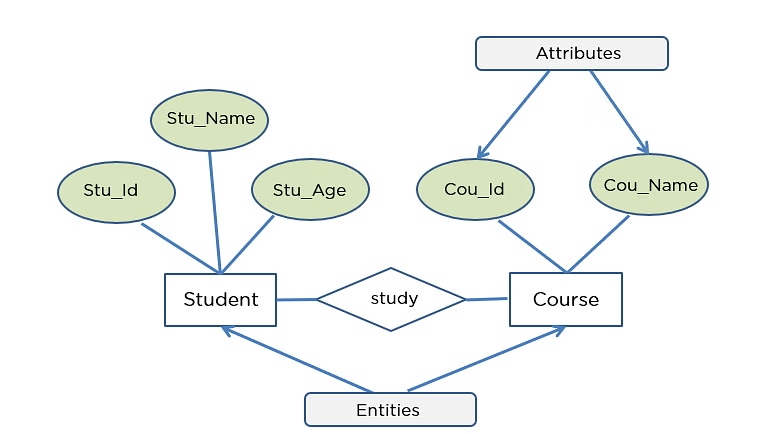

In C programming, a function is a block of code designed to perform a specific task. Functions help break a large program into smaller, manageable parts. This modular approach improves readability, reduces code duplication, and simplifies debugging. Once a function is defined, it can be called multiple times in a program.
The general syntax for defining a function in C is:
return_type function_name(parameter_list) {
// function body
}
The return type specifies the data type of the value the function returns. The function name is an identifier. The parameter list includes input values (optional).
The function prototype is a declaration that tells the compiler about the function’s name, return type, and parameters. It is written before the main function.
int add(int a, int b);
The function call is used to execute the function. When called, control transfers to the function's body.
int result = add(5, 3);
This is the actual implementation where the logic of the function is written.
int add(int a, int b) {
return a + b;
}
The return type specifies the kind of value a function returns. If it returns nothing, the return type is void.
#include <stdio.h>
int getNumber() {
int num = 50;
return num;
}
int main() {
int result = getNumber();
printf("Value: %d", result);
return 0;
}
#include <stdio.h>
int multiply(int x, int y) {
return x * y;
}
int main() {
int product = multiply(4, 5);
printf("Product: %d", product);
return 0;
}
#include <stdio.h>
void greet() {
printf("Hello, welcome to C programming!");
}
int main() {
greet();
return 0;
}
#include <stdio.h>
void display(int number) {
printf("The number is: %d", number);
}
int main() {
display(10);
return 0;
}
Storage classes define the scope, lifetime, and visibility of variables within a program. There are four main storage classes in C:
Auto is the default storage class for local variables declared inside functions. These variables are created when the function is called and destroyed when it ends.
void example() {
auto int x = 10;
printf("Value of x: %d", x);
}
The extern storage class is used to declare a global variable defined elsewhere. It allows sharing variables across multiple files.
// In File1.c
extern int count;
void show() {
printf("Count is %d", count);
}
The register storage class requests the compiler to store the variable in a CPU register for faster access. It cannot be accessed using pointers.
void fastAccess() {
register int speed = 100;
printf("Speed is %d", speed);
}
The static storage class retains the value of a variable even after the function has completed execution. It is initialized only once and maintains its state.
void counter() {
static int count = 0;
count++;
printf("Count = %d\n", count);
}
int main() {
counter();
counter();
counter();
return 0;
}
A recursive function is a function that calls itself in order to solve a problem. The problem is divided into smaller sub-problems, and recursion continues until a base case is met. Recursion is useful for problems that can be broken down into similar sub-problems, like factorials, Fibonacci numbers, or tree traversal.
return_type function_name(parameters) {
if (base_condition)
return result;
else
return function_name(smaller_problem);
}
#include <stdio.h>
int factorial(int n) {
if (n == 0)
return 1;
else
return n * factorial(n - 1);
}
int main() {
int num = 5;
int result = factorial(num);
printf("Factorial of %d is %d", num, result);
return 0;
}
#include <stdio.h>
int sum(int n) {
if (n == 0)
return 0;
else
return n + sum(n - 1);
}
int main() {
int n;
printf("Enter a positive integer: ");
scanf("%d", &n);
printf("Sum of first %d numbers is %d\n", n, sum(n));
return 0;
}
Arrays in C can be passed to functions by specifying the array name without brackets. The function receives the base address of the array, allowing it to access and manipulate the original elements.
#include <stdio.h>
void displayArray(int arr[], int size) {
for (int i = 0; i < size; i++) {
printf("%d ", arr[i]);
}
}
int main() {
int numbers[5] = {10, 20, 30, 40, 50};
displayArray(numbers, 5);
return 0;
}
An Entity-Relationship (ER) Diagram is a visual representation of data and how it is related. It is used in database design to model the logical structure of a database. It includes entities, their attributes, and the relationships between entities.
An entity represents a real-world object or concept, such as Student or Course. It is typically shown as a rectangle in an ER diagram.
Attributes describe properties of an entity. For example, a Student entity may have attributes like Student_ID, Name, and Age. Attributes are shown as ovals connected to their entity.
Relationships show how entities are connected to each other. For example, a Student "enrolls in" a Course. Relationships are represented as diamonds in ER diagrams.

CREATE TABLE Students (
ID INT PRIMARY KEY AUTO_INCREMENT,
Name VARCHAR(100) NOT NULL,
Email VARCHAR(100) UNIQUE
);
SELECT * FROM Students WHERE Age > 18 AND Gender = 'Male'; SELECT * FROM Students WHERE City = 'Delhi' OR City = 'Mumbai'; SELECT * FROM Students WHERE NOT (Marks < 35);
The WHERE clause is used to filter records that fulfill a specified condition.
SELECT * FROM Students WHERE Age > 18;
The ORDER BY clause is used to sort the result-set in ascending (default) or descending order.
SELECT * FROM Students ORDER BY Name ASC; SELECT * FROM Students ORDER BY Marks DESC;
JOINs are used to combine rows from two or more tables based on a related column.
SELECT Students.Name, Courses.CourseName FROM Students INNER JOIN Courses ON Students.CourseID = Courses.ID;
SELECT Students.Name, Courses.CourseName FROM Students LEFT JOIN Courses ON Students.CourseID = Courses.ID;
SELECT Students.Name, Courses.CourseName FROM Students RIGHT JOIN Courses ON Students.CourseID = Courses.ID;
SELECT Students.Name, Courses.CourseName FROM Students FULL OUTER JOIN Courses ON Students.CourseID = Courses.ID;
A structure in C is a user-defined data type that allows grouping variables of different types under a single name.
Syntax:
struct structure_name {
data_type member1;
data_type member2;
...
};
The size of a structure depends on the combined size of its members, plus possible padding added by the compiler for alignment.
Code Example:
#include <stdio.h>
struct Point {
int x;
int y;
};
int main() {
struct Point p1;
p1.x = 10;
p1.y = 20;
printf("Point coordinates: (%d, %d)\n", p1.x, p1.y);
return 0;
}
Code Example:
#include <stdio.h>
struct Date {
int day;
int month;
int year;
};
struct Student {
char name[50];
struct Date dob; // Nested structure
};
int main() {
struct Student s = {"Alice", {15, 8, 2000}};
printf("%s was born on %d/%d/%d\n", s.name, s.dob.day, s.dob.month, s.dob.year);
return 0;
}
Code Example:
#include <stdio.h>
struct Point {
int x, y;
};
int main() {
struct Point points[3] = {{1, 2}, {3, 4}, {5, 6}};
for (int i = 0; i < 3; i++) {
printf("Point %d: (%d, %d)\n", i+1, points[i].x, points[i].y);
}
return 0;
}
Code Example:
#include <stdio.h>
struct Point {
int x, y;
};
void printPoint(struct Point p) {
printf("Point: (%d, %d)\n", p.x, p.y);
}
int main() {
struct Point p1 = {10, 20};
printPoint(p1);
return 0;
}
A union is a user-defined data type in C similar to a structure, but all members share the same memory location. This means only one member can store a value at any given time.
Syntax:
union union_name {
data_type member1;
data_type member2;
...
};

A pointer is a variable that stores the memory address of another variable.
Syntax:
data_type *pointer_name;
Pointers allow direct access and manipulation of memory locations, making them powerful for dynamic memory allocation, arrays, and functions.
int a = 10; int *p = &a; // Pointer p holds the address of variable a
Code Example:
#include <stdio.h>
void increment(int *ptr) {
(*ptr)++; // Dereference pointer to increment value
}
int main() {
int num = 5;
increment(&num);
printf("Incremented value: %d\n", num); // Outputs 6
return 0;
}
Passing address of variable to a function to modify the original variable.
Code Example:
#include <stdio.h>
void swap(int *a, int *b) {
int temp = *a;
*a = *b;
*b = temp;
}
int main() {
int x = 10, y = 20;
swap(&x, &y);
printf("x = %d, y = %d\n", x, y); // Outputs x=20, y=10
return 0;
}

Code Example:
#include <stdio.h>
int main() {
int arr[] = {10, 20, 30};
int *p = arr; // Points to first element
for (int i = 0; i < 3; i++) {
printf("%d ", *(p + i));
}
return 0;
}
A data file is a fundamental component in computer systems used to store information permanently in a non-volatile storage medium such as a hard drive, solid-state drive, or any external storage device. Unlike volatile memory like RAM, which loses its contents once the system is powered off, data files retain information indefinitely until explicitly deleted or modified. Data files serve as containers that hold data in structured or unstructured formats, including plain text, binary data, images, audio, and complex data formats like spreadsheets or databases. The primary purpose of data files is to enable programs and users to store vast amounts of information beyond the temporary memory limits, ensuring that critical data such as user preferences, application settings, logs, records, and multimedia content are available for future use.
File handling is an indispensable feature in programming that empowers applications to interact with data stored in files through various operations such as creation, reading, writing, updating, and deletion. The need for file handling arises from the fundamental requirement of preserving data beyond the lifespan of a program’s execution. When a program runs, data is usually held temporarily in memory, which is volatile and erased when the program closes or the system shuts down. File handling enables data to be stored persistently on a storage device, making it accessible across multiple program runs and system restarts. This capability is crucial for almost every software application, from simple text editors that save user documents to complex database management systems that handle millions of records. Through file handling, programs can organize data efficiently, whether sequentially (processing data in order) or randomly (accessing data at any position), depending on the application’s needs. Furthermore, file handling provides essential functionalities like error checking, data buffering, and file positioning, ensuring the accuracy and integrity of data during input/output operations.
| Function | Purpose | Syntax |
|---|---|---|
| fopen() | Opens a file and returns a pointer to the file | FILE *fopen(const char *filename, const char *mode); |
| fclose() | Closes an opened file | int fclose(FILE *stream); |
| getc() | Reads a single character from a file | int getc(FILE *stream); |
| putc() | Writes a single character to a file | int putc(int char, FILE *stream); |
| fprintf() | Writes formatted output to a file | int fprintf(FILE *stream, const char *format, ...); |
| fscanf() | Reads formatted input from a file | int fscanf(FILE *stream, const char *format, ...); |
| getw() | Reads a word (integer) from a file | int getw(FILE *stream); |
| putw() | Writes a word (integer) to a file | int putw(int w, FILE *stream); |
| fgets() | Reads a string from a file | char *fgets(char *str, int n, FILE *stream); |
| fputs() | Writes a string to a file | int fputs(const char *str, FILE *stream); |
| fread() | Reads binary data from a file | size_t fread(void *ptr, size_t size, size_t count, FILE *stream); |
| fwrite() | Writes binary data to a file | size_t fwrite(const void *ptr, size_t size, size_t count, FILE *stream); |